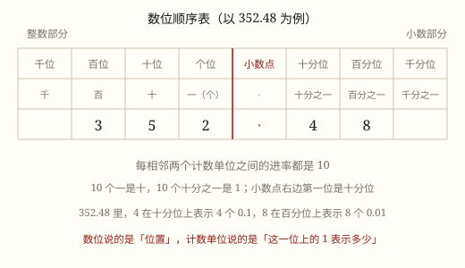

十进制计数法与数位顺序表
满十进一、位值制：同一个数字站在不同数位上，表示的大小就相差十倍、百倍。
| 所属主题 | 数的意义和性质 |
|---|---|
| 所属模块 | 数与代数 |
| 课标学段 | 第二学段（3~4年级） |
| 前置知识 | 100 以内数的组成与数位 |
| 核心素养 | 数感符号意识 |
课标要求
| 数与代数·数与运算 | 在实际情境中感悟并理解万以内数的意义，理解数位的含义，知道用算盘可以表示多位数（例1）。 印刷第 18 页 行为动词：理解 |
|---|---|
| 数与代数·数与运算 | 在具体情境中，认识万以上的数，了解十进制计数法；探索并掌握多位数的乘除法，感悟从未知到已知的转化（例8）。 印刷第 20 页 行为动词：掌握 |
说明
数数时，9 的后面再添 1 个，就凑够 10 个「一」。把这 10 根小棒捆成 1 捆，记作 1 个「十」，写成 10。满十就进一，这就是十进制。
10 个十捆成一大包，是 1 个「百」；10 个百捆成一箱，是 1 个「千」；10 个千是 1 个「万」。相邻两个计数单位之间的进率都是 10。
数位顺序表把位置排好了：从右往左，个位到千位组成个级，万位到千万位组成万级，亿位到千亿位组成亿级。每四位一级，级与级之间的进率是 10 × 10 × 10 × 10 = 10000。
关键是位值：数字只负责说「几个」，站在哪一位才决定「几个什么」。3 写在百位，表示 3 个百，也就是 300；写在十分位，表示 3 个 0.1，也就是 0.3。
使用场景
看新闻里的大数：城市人口 8 420 000、快递年业务量 13 亿件，数字越长，越要靠数位才读得出大小。
拨计数器、打算盘：一颗珠子拨在不同档上，值就不一样——算盘就是位值制的实物模型。
看存折金额：3 050.00 元中间那个 0 不能省，它占着百位，说明这一位一个单位也没有。
看体检单：1.48 米里的 4 在十分位（4 分米），8 在百分位（8 厘米）。
注意点
数位名称和计数单位不是一回事：个位、十位是「位置」，个、十是「单位」。说「3 在百位」，说「3 个百」，主语不同。
进率 10 说的是相邻两个单位：个位到百位是 100，个级到万级是 10000，跨级时要乘几次。
0 也要占位：305 里的 0 若省掉写成 35，三百零五就变成了三十五。
小数点右边没有个位：紧挨小数点右边的是十分位，单位是 0.1，比 1 小。

图 1：数位说位置，计数单位说这一位上的 1 是多少
为什么是这样
算理推导
捆小棒捆出「十」。数小棒：1 根、2 根……数到 9 根还没捆；再添 1 根正好 10 根，用皮筋捆成 1 捆。10 个一换成 1 个十，位置往左挪了一位。
再往上，还是这一招。凑够 10 捆就扎成一大包，是 1 个百。一包 = 10 捆 = 100 根，所以百位上的 1 等于十位上的 10，也等于个位上的 100。
位置就这样被捆了出来。从右往左，第一格放单根，第二格放捆，第三格放包，第四格放箱。第 1 格代表 1，第 2 格代表 10，第 3 格代表 100，第 4 格代表 1000——每往左挪一格，代表的东西就扩大到 10 倍。
每个数字替自己那一位说话。2305 就是「2 个千 + 3 个百 + 0 个十 + 5 个一」，写成 2 × 1000 + 3 × 100 + 0 × 10 + 5 × 1。中间那一位没有东西可放，就写 0 占住位置。
往右延伸，道理一样。想把 1 再分细，就再开一格装 0.1，再往右是 0.01；中间的关口是小数点。
动手实验
在计数器上拨出 2305，把千位的 2 颗珠子挪到十位，读数变成多少？再拨出 305，说说每个数字在哪一位、表示几个几。
按场景的例题
例 1（场景：物流运输） 快递分拣中心的日处理量
某分拣中心一天处理 1 286 400 件包裹。数字 8 在哪一位、表示多少？2 呢？
解：分级为 128 | 6400。8 在万位，表示 8 个万，即 80 000；2 在十万位，表示 2 个十万，即 200 000。
答：8 表示 8 个万（80 000）；2 表示 2 个十万（200 000）。
例 2（场景：金融理财） 存折上的一笔余额
余额显示 30 508.60 元。整数部分的 3 在哪一位、表示多少？小数部分的 6 呢？
解：3 在万位，表示 3 个万，即 30 000 元；6 在十分位，表示 6 个 0.1 元，即 6 角。
答：3 表示 30 000 元；6 表示 6 角。
例 3（场景：校园生活） 运动会参赛人数统计
全校有 2060 名同学参加运动会。6 在哪一位？如果把 6 挪到百位，这个数变成多少？
解：6 在十位，表示 6 个十，即 60。挪到百位后，6 表示的数由 60 变成 600，扩大到原来的 10 倍；整个数由 2060 变成 2600。
答：6 在十位；6 表示的数变成 600，是原来的 10 倍；整个数变成 2600。
例 4（场景：计量与估算） 一段地铁线路的长度
地铁 12 号线全长 40.85 千米。整数部分的 4 和小数部分的 8 各表示多少米？
解：4 在十位，是 4 个十千米即 40 千米（40000 米）；8 在十分位，是 8 个 0.1 千米即 800 米；5 在百分位，是 50 米。
答：4 表示 40 千米（40000 米），8 表示 800 米。
常用推论
相邻两个计数单位之间的进率是 10；每四位组成一级，级与级之间的进率是 10000。
一个数等于各数位上的数字乘对应计数单位再相加：2 305 = 2 × 1000 + 3 × 100 + 0 × 10 + 5 × 1。
小数点每向右移动一位，这个数就乘 10；向左移动一位就除以 10。
易错点
错「3 在百位上，表示 300 个一。」
为什么错把「数位」和「计数单位」拧在一起了。说「百位」，配的单位就是「百」；说「300 个一」，那是把百位换算到了个位。
正确3 在百位上，表示 3 个百，也就是 300。
错「相邻两个计数单位之间的进率是 100。」
为什么错记成了跨一级的进率。个位到十位、十位到百位，每次只进 10；从个位直接跳到百位才是 100。
正确相邻单位进率是 10；个级与万级之间是 10000，因为中间隔了四位。
错「4050 读作四千五十，百位上那个 0 可以不写。」
为什么错0 在数位上负责占位。省掉一个 0，所有数位整体左移，4050 就变成了 450。
正确百位上一个单位也没有，必须写 0 占位，读作四千零五十。
直观理解
把数位顺序表想成一排抽屉：最右边的抽屉装散装糖，每 10 颗装满就封成一盒放进左边一格，每 10 盒再封成一箱放进更左边。抽屉越往左，装的东西越大件；同一个数字，放进哪个抽屉就变成哪个量级。
满十进一记心间，十个一捆变成十；十捆一包就是百，十包一箱才到千。右起第一位是个位，往左越走位越大；同一个数看位置，位置一换差十倍。